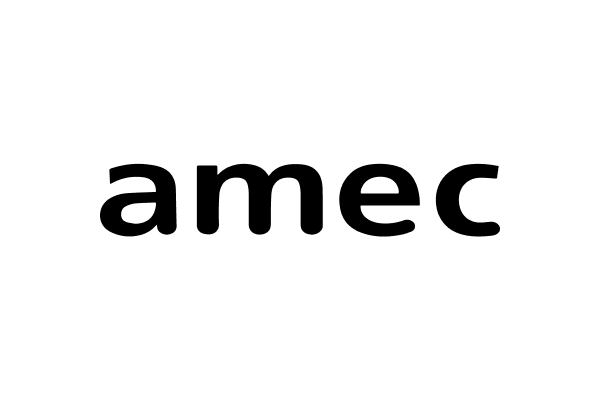
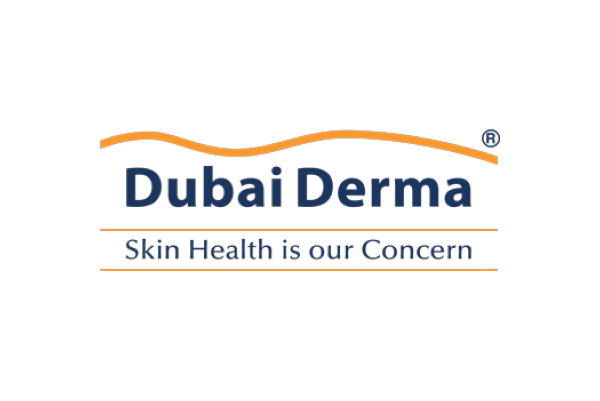

О компании
В 2010 году д.м.н. Дориной Донич при поддержке швейцарской компании A SWISS GROUP была разработана концепция рассасывающихся нитей для омоложения лица и тела Luxeface & Luxebody. Это плод многолетних научных и практических трудов международной команды врачей и исследователей, целью которых было создание эффективного и безопасного инструмента для эстетической медицины. Так появились нити, которые действуют сразу в трех направлениях: обновление кожного матрикса, подтяжка тканей и восстановление их объема.
Сегодня Luxeface&Luxebody – неотъемлемая часть регенеративной косметологии и золотой стандарт нитевого омоложения. Это малоинвазивная методика с коротким периодом восстановления, результаты которой впечатляют уже сразу после процедуры, а в течение нескольких месяцев после лифтинг-эффект усиливается.
Наработанные
технологии
Введенные по тщательно выверенным схемам, нити стимулируют неоколлагенез и васкуляризацию, снижают гипоксию, что способствует оздоровлению кожи. А благодаря высококачественным материалам и чистоте производства гарантировано отсутствие фиброза и шлаков в тканях. Также исключены риски контурирования, аллергических реакций, рубцевания и миграции нитей.
Нити Luxeface&Luxebody высочайшего швейцарского качества и подходят для коррекции самых деликатных зон лица и тела, среди которых — губы, веки, декольте, грудь, ягодицы, живот и спина. Эстетические задачи решаются с ювелирной точностью, и в некоторых случаях нитевая подтяжка по этой методике становится альтернативой пластическим операциям.
В обучающих семинарах Luxeface участвуют косметологи, дерматологи и пластические хирурги из разных стран.
Ученые A SWISS GROUP вывели оптимальную формулу омоложения, которая позволяет добиваться максимально длительного и естественного лифтингового эффекта, при этом сохраняя индивидуальные черты человека. Наслаждаться результатом пациенты могут в среднем от 2 до 5 лет. Научные исследования доказали, что длительность эффекта зависит от выбранных нитей, методики имплантации и особенностей кожи.
Автор методики Luxeface&Luxebody, доктор медицинских наук, пластический хирург, врач антивозрастной медицины, Дорина Донич регулярно делится результатами работы с Luxeface & Luxebody на международных конгрессах, и ее доклады каждый раз вызывают овации и колоссальный интерес врачей.
Luxeface доверяют во всем мире, и это одна из самых востребованных методик. На сегодняшний день проведено более 35000 процедур в России, странах СНГ, Европы, Азии, а также в Америке.
Почему специалисты выбирают Luxeface&Luxebody
Нити дают результат только в руках врача, который владеет техникой. Поэтому мы предлагаем
не отдельный продукт, а систему: инструмент, метод работы с ним и профессиональное сопровождение.
-
Линейка для любого протокола
В ассортименте есть нити из полидиоксанона (PDO), поликапролактона (PCL) и комбинации
PCL + PLLA с разным сроком рассасывания. Выбор форм тоже широкий: моно-нити, спиральные, пружинные, с насечками и двунаправленные на канюлях. Иглы от 31G до 18G и длина нити до 600 мм позволяют подобрать решение под конкретную анатомию и задачу, не переходя на продукцию других производителей -
Авторская техника установки
Нити фиксируются в неподвижных точках через проколы в волосистой части головы. Поэтому на лице не остаётся следов, а армирование выполняется по выверенным векторам. Врач работает по готовым схемам и не подбирает их методом проб.
-
Обучение у автора методики
Семинары ведут Дорина Донич и сертифицированные тренеры A Swiss Group. Программа включает теорию, практический мастер-класс, сертификацию и дальнейшую практику. Наиболее опытные специалисты могут стать наставниками и сами обучать коллег
-
Поддержка после обучения
Мы консультируем по выбору нитей и схем для сложных случаев, делимся клиническими материалами и держим врачей в курсе обновлений линейки и техник

Luxeface&Luxebody — это профессиональное сообщество, в котором ваша экспертиза растёт вместе с методикой. Оставьте заявку на обучение,
и мы расскажем, как начать работу.

Нам доверяют
Методику Luxeface&Luxebody выбирают клиники, для которых важны предсказуемый результат и безопасность пациента. Наши партнёры включают нитевой лифтинг в свои программы омоложения и развивают это направление вместе с нами.

